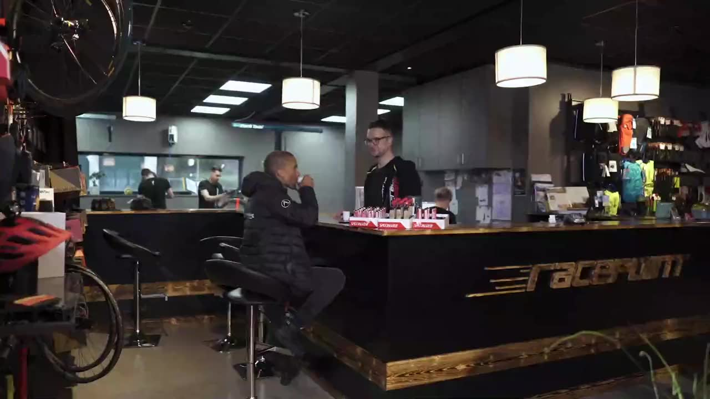
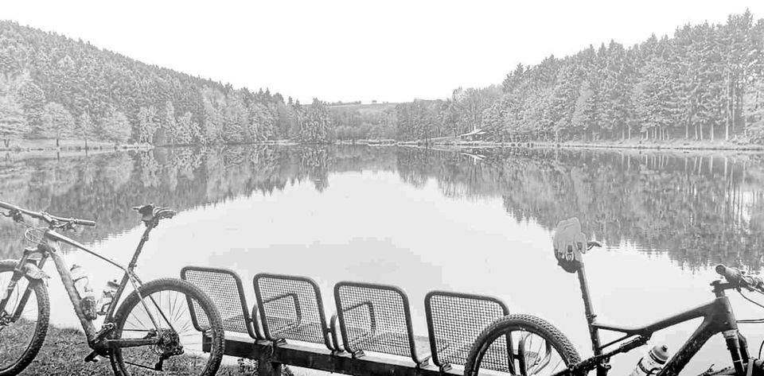

km 0 · Für alle
Kaffee bei Achim
Start in Schönberg.
Espresso, Reifendruck checken, kurz schnacken – und los. Achim kennt jede Runde hier. Und jede Schraube.
Jeden Samstag · 9:00 Uhr
Startet mit Kaffee. Endet mit Kaffee. Dazwischen: Venn, Eifel, Ardennen.
Racepoint ist der Bikeshop von Achim aus den Videos – Specialized Elite Händler, Werkstatt für alle Marken und Retül-Bikefitting in Ostbelgien. Fahr mit und finde unterwegs dein Rad.
Die Samstagsrunde · Karte stilisiert

km 0 · Für alle
Start in Schönberg.
Espresso, Reifendruck checken, kurz schnacken – und los. Achim kennt jede Runde hier. Und jede Schraube.

km 9 · Rennrad
Kurz, steil, glatt.
Rampen bis 12 %, Kurven wie gemalt. Hier zeigt ein leichtes Rennrad, was es kann – vom Allez bis zum S-Works Tarmac.

km 21 · Gravel
Weiter Himmel, breite Reifen.
Moor links, Moor rechts, Schotter unter dir. Diverge oder Crux – für Wege, die auf keiner Rennradkarte stehen.

km 33 · MTB & Enduro
Wurzeln, Anlieger, Matsch.
Stumpjumper, Enduro, Epic – und wenn die Gabel nach Service ruft: Fahrwerk-Service machen wir für alle Marken.

km 42 · E-Bike
Mehr Berge, gleiches Lächeln.
Sieben Kilometer bergauf – und oben noch Luft zum Reden. Turbo Levo, Vado oder Creo: Komm zur Probefahrt.

km 51 · Kids & Einsteiger
Eis für alle.
Die Kleinen am Ufer, die Großen am Kiosk. Kinderräder, Einsteiger-Bikes, Trekking – für jedes Budget.

km 58 · Ziel
Bike an die Wand, Kaffee in die Hand.
Und wenn unterwegs was geknarzt hat: Die Werkstatt ist direkt nebenan – für alle Marken.
Dein Rad für die RundeDein Rad für die Runde · Specialized & Cervélo
Vom ersten Kinderrad bis zum S-Works: Achim berät so ehrlich wie in seinen Videos. Wähl deinen Abschnitt der Runde – oder frag die KI, wenn du noch nicht weißt, was ein Tarmac ist.
KI-Berater · rund um die Uhr
Empfehlung aus dem echten Katalog, Rahmengröße, Budget – wenn’s persönlich wird, übernimmt Achim.
Preise: unverbindliche Herstellerpreise ausgewählter Modelle, Stand 14.10.2026. Leasing & Finanzierung auf Anfrage.
YouTube · @racepointbikeshop · ~80.000 Abos
Builds, Unboxings und Schrauber-Wissen – Achim erklärt jeden Handgriff, direkt aus Schönberg.
Werkstatt & Bikefitting
Nicht nur Specialized: Wir schrauben an allem, was zwei Räder hat. Und mit Retül sitzt du danach wirklich richtig.

Specialized · Cervélo · Trek · Canyon · Cube · Giant · Scott · Orbea · KTM …
Werkstatt-Termin

Ziel · km 58
„Komm vorbei, wir finden das Rad, das zu dir passt. Der Kaffee steht.“Achim Leufgen · Zweiradmechaniker-Meister & Retül-Fitter
Öffnungszeiten
Live-Status nach belgischer Zeit. Werkstatt- und Fitting-Termine nach Absprache.